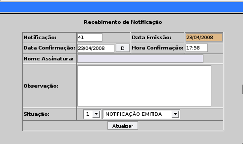
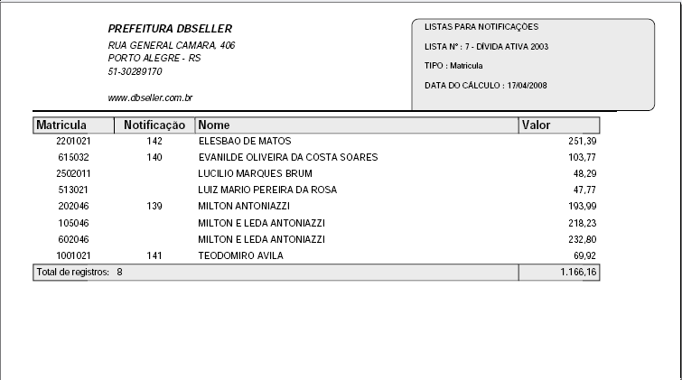
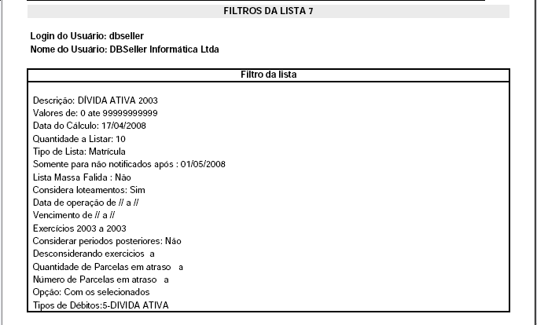
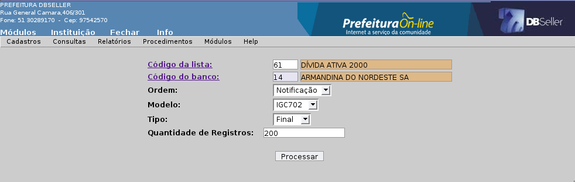

Figura 02
MÓDULO NOTIFICAÇÕES
O objetivo deste módulo é gerar notificações aos contribuintes para qualquer tipo de débito do sistema.
Estas notificações são geradas sempre através de uma lista de contribuintes, onde o usuário poderá gerar vários tipos de notificações como: Aviso de Débito, Notificação com recibo de pagamento ou Notificação sem recibo.
A lista gerada no Módulo Notificações poderá ser usada em outros módulos do DBPortal, em rotinas como: Prescrição de Dívida, Geração de Certidão de Dívida Ativa.
Nesse menu são cadastrados os tipos de notificações que a prefeitura vai utilizar para controlar suas notificações e se terão a confirmação de recebimento.
Se o campo Recebimento estiver marcado como SIM, o usuário poderá clicar na notificação na CGF e descrever os dados do recebimento como mostra na Figura 01.

Figura 01
Devem ser preenchidos os campos: Descrição e Recebimento, conforme Figura 02 abaixo.
Figura
02
O cadastro de Tipo de Notificação não poderá ser excluído quando ele estiver vinculado a uma notificação no sistema.
Nesse menu são cadastradas as situações em que a notificação pode estar no sistema.
Este cadastro é utilizado na descrição do recebimento da notificação na CGF (Consulta Geral Financeira) podendo o usuário escolher qual a situação que a notificação encontra-se, conforme Figura 01.
Deve ser preenchido o campo Descrição, conforme a Figura 03.

Figura
03
É feita a consulta financeira dos débitos dos contribuintes, e a descrição dessa consulta está no Módulo Arrecadação, conforme Figura 04.

Figura
04
Esse relatório emite as listas cadastradas no sistema, e caso a lista não tenha sido notificada (utilizada para gerar notificação), a coluna notificação aparece em branco.
Esse relatório é importante para verificação dos dados gerados pela lista cadastrada, seus valores e os filtros utilizados na geração da lista.
Descrição dos filtros para a emissão de uma lista, conforme Figura 05.
Lista: Colocar o código da lista ou clicar no link de pesquisa.
Ordem: O usuário pode ordenar os dados por: valor, numérico ou nome.
Agrupa Nome: Os débitos podem ser agrupado por nome.
Emite Valor: O usuário pode emitir com valores (Sim ou Não).
Tipo da Geração: PDF - Gera o relatório como padrão no Adobe Reader. TXT - Gera um arquivo com extensão .txt, sem a opção dos dados adicionais.
Informações Adicionais: Emite os dados no final do relatório com os filtros utilizados para criar a lista ao marcar a opção Sim.

Figura
05
Na Figura 06 mostra um modelo de uma lista emitida no DBPortal. No final mostra os filtros.

Figura
06
Esse relatório emite as posições (Pagas, Em débito, Parceladas) das notificações ligadas a uma lista de débitos.
Este relatório serve para o acompanhamento do andamento da lista notificada pelo sistema, e caso o contribuinte pagou, parcelou ou continua devendo o débito por exemplo.
Descrição dos filtros, conforme Figura 06.
Lista: Adicionar as lista que for referente as notificações que se quer emitir.
Tipo: Possui apenas a opção Todos.

Figura
06
Modelo de emissão conforme a Figura 07

Figura
07
Esse relatório emite as situação das notificações, onde o usuário pode verificar as situações das notificações de uma lista de débito com os valores dos débitos.
Descrição dos filtros, conforme Figura 08.

Figura
08
Na Figura 09 mostra um modelo de situação da notificação no DBPortal.

Figura
09
Esse relatório emite a lista das notificações e a segunda via de acordo com as opções: sem página de endereço, com página de endereço, aviso de débito, lista, SEED, AR.
Os modelos de notificações são cadastrados através dos documentos, e para emitir um recibo na notificação o documento vinculado a lista deve ter o parágrafo com o nome TOTALPORANOCOMRECIBO.
Descrição dos filtros para a emissão das notificações, conforme Figura 10.
Lista: Colocar o código da lista ou clicar no link para pesquisar.
Ordem: O usuário pode ordenar os dados por: notificação, numérico ou nome.
Tipo de Endereço: Deve ser selecionado a regra de endereçamento que será emitido o endereço de entrega da notificação.
Endereço CGM quando estiver nulo: Utiliza o endereço do cadastro de CGM, quando o endereço de entrega está nulo/inválido.
Intervalo: Ao selecionar Quantidade emite a quantidade colocada no intervalo inicial e final, e ao selecionar Notificações emite o intervalo dos códigos da notificações.
Emissão do Timbre: Este campo controla a localização dos timbres na emissão da notificação podendo escolher como: interno, externo, ambos ou sem timbre.
Data de Vencimento: Data do vencimento do recibo que é emitido na segunda página.
Tamanho da Fonte: Colocar a fonte que vai ser emitida a notificação.
Opção: Ao marcar Somente Selecionados (padrão) busca as notificações adicionadas no campo notificação, e se estiver marcado Menos Selecionados busca os não adicionados na seleção.
Notificação: Colocar o código da notificação ou clicar no link para pesquisar.
Opções de Impressão: sem endereço, com endereço, aviso de débito, lista, SEED, AR.

Figura
10
Na emissão das notificações é muito importante saber quais os modelos de impressão das notificações.
Descrição e modelo das opções de impressão.
Notificação sem página de endereço: Está opção emite as notificações sem a segunda página de endereço, quando o usuário já possui um envelope com o endereço de correspondência. Modelo na Figura 11.

Figura
11
Notificação com página de endereço: Está opção emite as notificações com a segunda página de endereço, quando o usuário imprime na parte do verso o endereço. Conforme a Figura 12.

Figura
12
Aviso de Débitos: Emite um formulário para aviso com os dados do contribuinte na parte inferior da página, conforme Figura 13.

Figura
13
Lista: Emite uma lista das notificações gerada pela Lista selecionada na emissão do sistema, conforme Figura 14.

Figura
14
SEED: Emite um comprovante do correio.
AR: Emite um comprovante de recebimento.
Esse relatório gera um arquivo .txt com layout e dados, para enviar para gráfica ou banco fazer a emissão das notificações.
Possui os modelos:
CBR454 (convênios Arrecadação e Ficha de Compensação)
IGC702 (convênio Ficha de Compensação)
Gráfica (convênios Arrecadação e Ficha de Compensação).
Descrição dos filtros e modelo conforme a Figura 15

Figura
15
Nesse procedimento é criado a lista de débitos que pode ser vinculado com outros procedimentos do sistemas como: notificações, emissão de CDA e prescrição de dívida.
Uma lista pode ser usadas em mais de uma aplicação, como notificar e gerar CDA.
Na criação de uma lista devem ser preenchidos os seguintes campos, conforme Figura 16 :
Código: O campo é gerado automático.
Descrição: Preencher o nome da Lista. Obrigatório.
Data Débitos: O sistema busca a última data que foi gerada a tabela débitos no sistema, que origina os dados da lista. OBS: Podem haver distorções com estes valores e a Consulta Geral Financeira, pela referência da débitos por não estar com a data atualizada. Campo obrigatório.
Valores: Busca por padrão os intervalos entre (0 – 999999999), podendo o usuário escolher os intervalos de valores dos débitos que deve buscar a lista.
Quantidade a Listar: Preencher a quantidade de registro que se quer listar de acordo com o campo Tipo de Lista.
Tipo de Lista: “CGM (Geral)” - Marcando opção traz todos os débitos referente ao CGM. (Padrão). “CGM” - Marcando opção traz todos os débitos somente do CGM. “Matricula” - Marcando opção traz os débitos referente as Matriculas Imobiliárias. “Inscrição” - Marcando opção traz os débitos referente as Inscrições Municipais.
Notificação Após: Não lista os contribuintes que foram notificados a partir dessa data.
Massa Falida: Essa opção busca os débitos dos contribuinte que são Massa Falidas. Trás marcado Não (padrão).
Loteamento: Essa opção busca os débitos dos contribuinte que são Loteamentos. Trás marcado Sim (padrão).
Data de Operação: Data de quando foi gerado o débito no sistema.
Data do Vencimento: Data dos vencimentos dos débitos.
Exercício: Período do exercício em que os débitos vão ser listados.
Desconsidera Exercício: Período dos exercícios que vão ser desconsiderados.
Período Posterior: Considera os débitos dos períodos superiores ao campo Exercício.
Quant. Parcela em Atraso: Considera o número de parcelas atrasadas, no caso de um tipo de débito for de parcelamentos. OBS: Se quiser considerar apenas 3 parcelas atrasadas, deve colocar um intervalo (1 – 3).
Cód. Parcela em Atraso: Considera no intervalo quais parcelas que estão em atraso. OBS: Quero uma lista onde quero cobrar a parcela 6 do IPTU, colocar um intervalo (6 – 6).
Opção: Ao marcar Somente Selecionados (padrão) busca os tipos de débitos adicionados no campo Tipos de Débitos, se estiver marcado Menos Selecionados busca os não adicionados na seleção.
Tipos de Débitos: Adicionar quais os débitos que se quer fazer uma lista, está opção está ligada ao filtro Opções. Caso não escolher nenhum tipo de débito o sistema busca todos os.

Figura
16
Em uma lista de débito é importante saber que ao ser criada busca os dados financeiros na Tabela Débitos é uma tabela auxiliar com todos os dados financeiros “congelados” em relação ao valor corrigido/juro/multa.
Caso a data da tabela débitos estiver desatualizada, pode um contribuinte não estar devendo na CGF e sair na lista.
Para que isso não ocorra, devemos verificar sempre no campo Data Débitos para utilizar dados bem atualizados.
Para excluir uma lista, esta não pode estar vinculada à nenhum processo do sistema como notificações, emissão de CDA ou prescrição de dívida.
Nesse procedimento são geradas notificações para os contribuintes, com a finalidade de avisar os contribuintes de alguma pendência de débitos na prefeitura. E o contribuinte deve se adequar ao que foi notificado na data prevista na notificação.
Para gerar notificações, devemos preencher os campos Lista, Tipo de Notificação e Contribuinte (caso o usuário queria notificar apenas alguns contribuintes de uma lista) conforme a Figura 17. Se não preencher nada na lista de contribuintes, todos os contribuintes da lista serão notificados.

Figura
17
Quando for gerada uma emissão de notificação, deve ser anexado um documento do sistema a uma lista de débito, e a impressão vai se utilizar da configuração/layout definida neste documento vinculado a lista.
Para vincular um documento a uma lista de notificações, o documento precisa ter o documento padrão 1200.
Para vincular o documento deve ser preenchido os campos Lista e Documento conforme a Figura 18.

Figura
18
Nesse procedimento é gerado as notificações vinculadas a uma lista de débito de um edital, conforme Figura 19.

Figura
19
|
DBSeller Serviços de Informática Ltda. – www.dbseller.com.br Rua General Câmara, 406/301 – Porto Alegre/RS – Fone: (51) 3076-5101 |
|